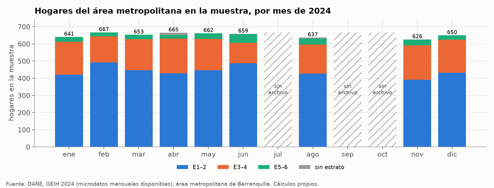
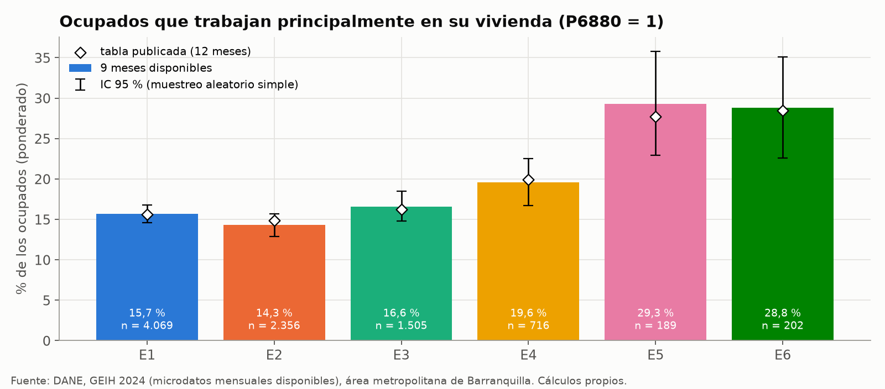
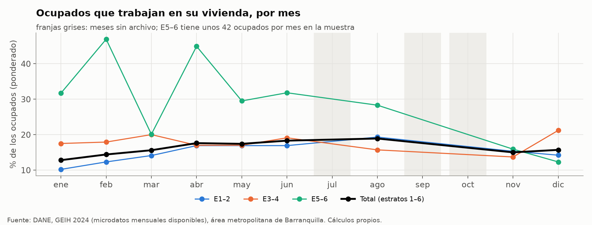
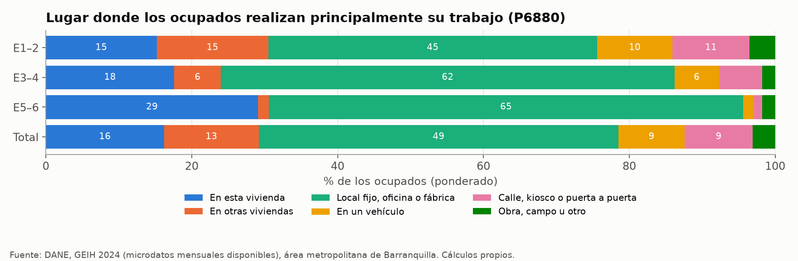
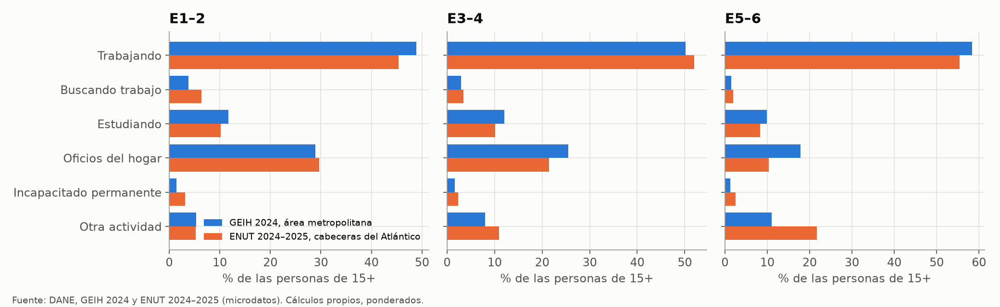

Gran Encuesta Integrada de Hogares (GEIH)#
La GEIH 2024 es la fuente de la tesis sobre el trabajo en la propia vivienda, que decide si un ocupado sale de casa durante el día o se queda en ella. Entra al paso 3 de la Fase 2 junto con la ENUT, y además describe la vivienda y la composición de los hogares del área metropolitana de Barranquilla. Este capítulo describe la encuesta, muestra su análisis exploratorio con los meses de 2024 disponibles y explica paso a paso cómo se obtiene la tasa de trabajo en la vivienda de la Tabla 11. Las cifras salen de scripts/eda/geih.py, que lee los zips mensuales del DANE y escribe las figuras figuras/eda/geih_*.png y las tablas tablas/eda/geih_*.csv. Ese script reproduce el procesamiento original de scripts/geih.py y scripts/geih2.py.
Qué es#
La GEIH es la encuesta continua del DANE sobre el mercado laboral y las condiciones de los hogares (DANE, 2025b). La tesis usa la de 2024 (catálogo 819 del DANE), que se levanta todos los meses con el marco muestral de 2018. Cada mes es una muestra distinta de hogares, expandida a la población completa con su factor FEX_C18, y por eso al juntar meses el factor se divide por el número de meses (Metodología). Para cada persona registra su edad, su educación y su actividad de la semana anterior, y para cada ocupado, entre muchas otras preguntas, cuántas horas trabaja y en qué lugar realiza principalmente su trabajo, que es la pregunta que usa la tesis.
Cobertura y estructura#
Cada zip mensual trae ocho módulos en CSV, Stata y SPSS: «Datos del hogar y la vivienda», «Características generales, seguridad social en salud y educación», «Fuerza de trabajo», «Ocupados», «No ocupados», «Otras formas de trabajo», «Migración» y «Otros ingresos e impuestos». Los CSV usan «;» como separador y la codificación latin-1, y en los zips de marzo y abril vienen dentro de un segundo zip (CSV.zip). La tesis usa los cuatro primeros. La vivienda se identifica con DIRECTORIO, el hogar con MES + DIRECTORIO + SECUENCIA_P y la persona con el hogar más ORDEN.
El dominio es el área metropolitana de Barranquilla, que en los microdatos es AREA = 08 e incluye a Barranquilla, Soledad, Malambo, Puerto Colombia y Galapa (Encuestas usadas y representatividad). Todos sus registros son de cabecera (CLASE = 1). En la carpeta de descargas hay 9 de los 12 meses de 2024, y faltan julio, septiembre y octubre (Tabla 31). Con esos 9 meses, la muestra del área metropolitana es de 5.860 hogares, 20.714 personas y 9.082 ocupados, frente a los 7.772 hogares y 27.445 personas de los 12 meses que se procesaron para la Tabla 56. Ningún hogar aparece en dos meses distintos. Expandidos con FEX_C18 / 9, los 9 meses representan 582.748 hogares y 2.038.418 personas, menos de 0,2 % por debajo de las cifras con 12 meses.
Mes |
Archivo |
Hogares |
Personas |
Ocupados |
Hogares expandidos |
Personas expandidas |
|---|---|---|---|---|---|---|
Enero |
|
641 |
2.401 |
984 |
575.848 |
2.030.154 |
Febrero |
|
667 |
2.456 |
1.053 |
577.229 |
2.031.932 |
Marzo |
|
653 |
2.342 |
1.031 |
578.604 |
2.033.583 |
Abril |
|
665 |
2.273 |
985 |
579.970 |
2.035.343 |
Mayo |
|
662 |
2.331 |
1.011 |
581.324 |
2.037.044 |
Junio |
|
659 |
2.284 |
1.026 |
582.664 |
2.038.800 |
Julio |
No disponible |
|||||
Agosto |
|
637 |
2.156 |
977 |
585.155 |
2.042.260 |
Septiembre |
No disponible |
|||||
Octubre |
No disponible |
|||||
Noviembre |
|
626 |
2.180 |
970 |
593.781 |
2.047.470 |
Diciembre |
|
650 |
2.291 |
1.045 |
590.155 |
2.049.175 |
Total (9 meses) |
5.860 |
20.714 |
9.082 |
582.748* |
2.038.418* |
*Promedio de los 9 meses, que es la suma de FEX_C18 / 9.
Variables que usa la tesis#
Código (módulo) |
Pregunta o contenido |
Uso en el modelo |
|---|---|---|
|
Área metropolitana (08 = Barranquilla) y clase |
Filtro del dominio |
|
Llaves de mes, vivienda, hogar y persona |
Unión de los módulos |
|
Factor de expansión mensual |
Ponderación, dividido por el número de meses |
|
Estrato para tarifa |
Estrato 1 a 6 |
|
Tipo de vivienda, cuartos y dormitorios |
Descripción de la vivienda (Tabla 11 usa la ECV) |
|
Tenencia de la vivienda y precio mínimo de venta |
Tabla publicada por estrato |
|
Personas del hogar |
Tamaño del hogar |
|
Edad |
Grupos de edad del hogar |
|
Actividad en que ocupó la mayor parte del tiempo la semana pasada |
Comparación con la ENUT |
|
Dónde realiza principalmente su trabajo; 1 = en esta vivienda |
Trabajo en la propia vivienda |
|
Horas a la semana que trabaja normalmente |
Horas de trabajo por ocupado |
|
Posición ocupacional |
Quién trabaja en la vivienda |
Análisis exploratorio#
Muestra por mes y estrato#
Cada mes aporta entre 626 y 667 hogares del área metropolitana, con una composición por estrato estable (Figura 31). Los estratos 1 y 2 suman cerca de dos tercios de la muestra, y los estratos 5 y 6 juntos tienen 273 hogares en los 9 meses, unos 30 por mes, lo que impide estimar algo mensual para ellos. Solo 25 hogares de los 9 meses no tienen estrato válido (24 con código 0 y uno vacío). Los tres meses que faltan son del segundo semestre, así que el promedio de los 9 meses pesa más el primer semestre (seis meses) que el segundo (tres).


Figura 31 Hogares del área metropolitana de Barranquilla en la muestra de la GEIH por mes de 2024 y grupo de estrato. Los meses rayados no tienen archivo.#
La Tabla 33 compara los 9 meses con la tabla publicada de 12 meses (tablas/GEIH2024_Barranquilla_AM_resumen_estrato.csv). En los estratos 1 a 4, la distribución de los hogares, el tamaño del hogar, los ocupados por hogar, los hogares sin ocupados y las horas de trabajo difieren a lo sumo en 1,1 puntos porcentuales o 0,04 personas por hogar. Las diferencias más grandes están en los estratos 5 y 6, en los hogares sin ocupados (20,8 % frente a 17,4 % en el estrato 5), donde la muestra es de 133 a 208 hogares.
Concepto |
E1 |
E2 |
E3 |
E4 |
E5 |
E6 |
|---|---|---|---|---|---|---|
Hogares en la muestra, 9 meses |
2.474 |
1.497 |
1.048 |
543 |
140 |
133 |
Hogares en la muestra, 12 meses |
3.288 |
1.926 |
1.401 |
720 |
208 |
187 |
% de los hogares, 9 meses |
44,3 |
29,6 |
14,1 |
7,9 |
2,1 |
2,0 |
% de los hogares, 12 meses |
44,0 |
29,1 |
14,0 |
7,7 |
2,5 |
2,1 |
Personas por hogar, 9 meses |
3,76 |
3,54 |
3,16 |
2,81 |
2,70 |
2,85 |
Ocupados por hogar, 9 meses |
1,59 |
1,56 |
1,44 |
1,32 |
1,37 |
1,48 |
Hogares sin ocupados, %, 9 meses |
7,6 |
10,9 |
13,6 |
20,9 |
20,8 |
11,7 |
Hogares sin ocupados, %, 12 meses |
7,6 |
11,0 |
14,7 |
21,0 |
17,4 |
13,2 |
Horas normales por ocupado a la semana, 9 meses |
44,2 |
44,8 |
44,9 |
44,5 |
46,2 |
47,1 |
Ocupados en la muestra, 9 meses |
4.069 |
2.356 |
1.505 |
716 |
189 |
202 |
Ocupados que trabajan en su vivienda, %, 9 meses |
15,7 |
14,3 |
16,6 |
19,6 |
29,3 |
28,8 |
IC 95 % (muestreo aleatorio simple) |
14,6–16,8 |
12,9–15,7 |
14,8–18,5 |
16,7–22,5 |
22,9–35,8 |
22,6–35,1 |
Ocupados que trabajan en su vivienda, %, 12 meses |
15,6 |
14,9 |
16,2 |
19,9 |
27,7 |
28,5 |
Hogares con al menos un ocupado en su vivienda, %, 9 meses |
21,6 |
19,0 |
20,0 |
22,6 |
34,1 |
34,0 |
Trabajo en la propia vivienda por estrato#
La proporción de ocupados que trabajan principalmente en su vivienda es de 14 % a 17 % en los estratos 1 a 3, sube a 19,6 % en el estrato 4 y llega a cerca de 29 % en los estratos 5 y 6 (Figura 32). Las cifras con 12 meses de la Tabla 11 caen dentro del intervalo de los 9 meses en todos los estratos, así que la falta de tres meses no cambia el insumo. Los intervalos de los estratos 5 y 6 tienen unos 13 puntos de ancho aun sin el efecto de diseño, de modo que la diferencia entre esos dos estratos no es interpretable, pero el salto frente a los estratos 1 a 4 sí lo es. A nivel de hogar, uno de cada cinco hogares de los estratos 1 a 4 y uno de cada tres de los estratos 5 y 6 tiene al menos un ocupado que trabaja en la vivienda.


Figura 32 Ocupados que trabajan principalmente en su vivienda por estrato con los 9 meses disponibles, su intervalo de confianza y el valor publicado con 12 meses.#
Quien trabaja en su vivienda es sobre todo un trabajador por cuenta propia, que es 73,5 % de este grupo frente a 35,1 % de los ocupados que trabajan fuera (tablas/eda/geih_posicion_en_casa.csv). Otro 8,0 % son empleados domésticos que trabajan en la vivienda donde viven. Estos ocupados trabajan en promedio 36,6 horas normales a la semana, frente a 46,1 de quienes trabajan fuera, lo que sugiere jornadas más cortas o partidas dentro de la vivienda.
Trabajo en la propia vivienda por mes#
La proporción de los estratos 1 a 6 sube de 12,8 % en enero a 18,9 % en agosto y vuelve a 15,0 % y 15,7 % en noviembre y diciembre (Figura 33). Con unos 1.000 ocupados por mes, el margen de error de un mes es de unos ± 2,3 puntos con muestreo aleatorio simple, así que la diferencia entre enero y agosto es mayor que el ruido. Con solo un año de datos no se puede decir si es un patrón estacional o un cambio a lo largo de 2024, y por eso la tesis usa el promedio anual. Las líneas por grupo de estrato son mucho más ruidosas, sobre todo la de los estratos 5–6, que tiene unos 40 ocupados por mes y en tres meses menos de 10 que trabajan en la vivienda.


Figura 33 Ocupados que trabajan en su vivienda por mes de 2024 y grupo de estrato, con los meses sin archivo en gris.#
Lugar de trabajo#
El lugar de trabajo cambia con el estrato más allá del trabajo en la vivienda (Figura 34). En los estratos 1–2, 45,1 % de los ocupados trabaja en un local fijo, oficina o fábrica, y el resto se reparte entre la propia vivienda (15,2 %), otras viviendas (15,3 %), la calle, un kiosco o de puerta en puerta (10,6 %) y un vehículo (10,3 %). En los estratos 5–6, el local fijo sube a 65,0 % y la propia vivienda a 29,1 %, y casi no hay trabajo en otras viviendas, en la calle ni en vehículos. Para el modelo de ocupación, el trabajo en otras viviendas, en la calle o en un vehículo cuenta como tiempo fuera de la vivienda igual que el de una oficina.


Figura 34 Lugar donde los ocupados realizan principalmente su trabajo, por grupo de estrato.#
Comparación con la ENUT#
La actividad principal de la semana anterior está en las dos encuestas (P6240 en la GEIH y P1152 en la ENUT), con los mismos códigos 1 a 4 para trabajar, buscar trabajo, estudiar y oficios del hogar (Metodología). Los códigos 5 y 6 de la ENUT se supusieron iguales a los de la GEIH (incapacitado permanente y otra actividad), y en la GEIH la pregunta solo tiene respuesta desde los 15 años. Con ese universo, las dos encuestas dan composiciones parecidas en el total, con 49,5 % trabajando en la GEIH y 47,0 % en la ENUT, y 27,8 % y 27,4 % dedicados a los oficios del hogar (Figura 35). Las diferencias se concentran en los estratos 5–6, donde la ENUT tiene más personas en «otra actividad» (21,7 % frente a 11,0 %) y menos en oficios del hogar (10,3 % frente a 17,9 %), con una muestra de 215 personas de 15 años o más en la ENUT. En los estratos 1 a 4 las diferencias son de hasta 4 puntos, lo que respalda el supuesto de que los dos dominios, distintos en territorio y periodo, describen una población parecida.


Figura 35 Actividad principal de la semana de las personas de 15 años o más en la GEIH 2024 y la ENUT 2024–2025, por grupo de estrato.#
Faltantes#
Las variables que usa la tesis no tienen faltantes en el área metropolitana. Los 9.082 ocupados responden el lugar de trabajo y las horas normales, las 16.445 personas de 15 años o más tienen actividad principal, y todos los hogares tienen número de personas y de cuartos. La única variable con muchos vacíos es el precio de venta de la vivienda (P5110), vacío en 61,2 % de los hogares, porque solo tiene dato en los hogares propietarios (P5090 = 1–2), que la responden todos. Por eso la mediana de la tabla publicada es la de los propietarios (Metodología). Los conteos están en tablas/eda/geih_faltantes.csv.
Procesamiento paso a paso#
Los pasos siguientes describen el procesamiento original (scripts/geih.py y scripts/geih2.py), que scripts/eda/geih.py repite leyendo los zips directamente. Cada paso indica la entrada, la operación, la salida y la decisión que se tomó.
Los módulos de cada mes se ubican dentro de su zip. Entrada: los zips mensuales de
DANE/GEIH, cuyos nombres no siguen un patrón (Ene_2024.zip,Marzo 2024.zip,Noviembre_ 2024.zip, etc.). Operación: se recorren los miembros de cada zip, se entra alCSV.zipanidado cuando existe (marzo y abril) y se identifica cada módulo por el comienzo de su nombre. Salida: los CSV de «Datos del hogar y la vivienda», «Características generales…», «Fuerza de trabajo» y «Ocupados» de cada mes. Decisión: el mes se toma de la columna MES y no del nombre del archivo, que es irregular.Cada módulo se lee y se filtra al área metropolitana. Entrada: los cuatro CSV de cada mes. Operación: lectura con separador «;» y codificación latin-1, todas las columnas como texto, limpieza de un posible BOM en el primer nombre de columna y filtro AREA = 08. Salida: entre 626 y 667 hogares por mes. Decisión: leer como texto conserva el «08» de AREA y evita que los códigos se conviertan en decimales.
Los meses se apilan en una sola tabla de hogares. Entrada: los hogares de los 9 meses. Operación: concatenación y comprobación de que ningún par DIRECTORIO + SECUENCIA_P se repite entre meses. Salida: 5.860 hogares (7.772 con los 12 meses del procesamiento original). Decisión: como cada mes es una muestra distinta, los hogares no se duplican y el MES forma parte de la llave.
El factor de expansión se lleva a la escala anual. Entrada: FEX_C18 de cada hogar. Operación: w = FEX_C18 / M, con M el número de meses apilados (12 en el procesamiento original y 9 en el EDA). Salida: un factor que suma, en el año, la población de un mes promedio. Decisión: cada mes ya está expandido a la población completa, así que sin dividir por M la población quedaría multiplicada por el número de meses.
Los ocupados se marcan según su lugar de trabajo. Entrada: el módulo «Ocupados» (todos sus registros tienen OCI = 1). Operación: en esta vivienda si
P6880= 1, según el diccionario de datos del marco 2018, y las 11 categorías se agrupan en seis para la Figura 34. Salida: marca de trabajo en la vivienda de cada ocupado. Decisión: el código 1 de la GEIH («en esta vivienda») no es el mismo de la ENUT, donde el trabajo en la vivienda es el código 2 (ENUT).Las personas y los ocupados se agregan por hogar. Entrada: personas (edad) y ocupados (lugar y horas normales
P6800). Operación: por hogar se cuentan las personas por grupo de edad (menores de 5, 5–17, 18–64, 65 y más), los ocupados, los ocupados que trabajan en la vivienda y la suma de sus horas normales. Salida: una fila por hogar con esos conteos. Decisión: un hogar sin registros en «Ocupados» tiene 0 ocupados y entra en la proporción de hogares sin ocupados.Las cifras se calculan por estrato con el factor anual. Entrada: la tabla de hogares con el estrato
P4030S1A1. Operación: % de ocupados en la vivienda = Σ w · (ocupados en la vivienda del hogar) / Σ w · (ocupados del hogar); horas por ocupado = Σ w · (horas del hogar) / Σ w · (ocupados del hogar); los demás atributos son proporciones y medias ponderadas. Salida:tablas/GEIH2024_Barranquilla_AM_resumen_estrato.csvy las tablastablas/eda/geih_*.csv. Decisión: los códigos de estrato 0 y vacío (25 hogares) quedan fuera de las tablas por estrato, como en las demás encuestas.El intervalo de confianza se calcula para cada estrato. Entrada: la proporción y el número de ocupados de la muestra en el estrato. Operación: p ± 1,96 · √(p (1 − p) / n). Salida: los intervalos de la Tabla 33. Decisión: supone muestreo aleatorio simple, como en Metodología, así que el intervalo real es más ancho por el diseño por conglomerados (Kish, 1965, Lohr, 2019).
Las salidas del script contienen solo agregados, con el tamaño de muestra de cada celda. Entrada: las tablas por estrato, mes, grupo de estrato y lugar de trabajo. Operación: escritura con separador «;» y UTF-8 con BOM, con el tamaño de muestra sin ponderar de cada celda. Salida: tablas y figuras sin datos de hogares o personas. Decisión: las celdas con menos de 10 personas de muestra quedan marcadas en la columna
n_menor_10.
Qué entrega al modelo#
La GEIH entrega al paso 3 de la Fase 2 la proporción de ocupados que trabajan principalmente en su vivienda por estrato, de 15,6 % en el estrato 1 a 28,5 % en el estrato 6, que está en la Tabla 11 de Insumos del modelo. En el modelo de ocupación, esa proporción decide qué fracción de los ocupados simulados no sale de la vivienda por trabajo, y la ENUT aporta el tiempo fuera de los demás (Encuesta Nacional de Uso del Tiempo). La incertidumbre de la tasa es la de su muestra por estrato, que en los estratos 5 y 6 es de unos ± 6,5 puntos aun sin el efecto de diseño. La tesis no usa la GEIH para la distribución de los hogares por estrato, porque el área metropolitana tiene más hogares de estratos bajos que Barranquilla (Tabla 68).
Problemas encontrados y cómo se trataron#
En la carpeta de descargas faltan los microdatos de julio, septiembre y octubre de 2024, aunque la tabla publicada y la Tabla 56 se hicieron con los 12 meses. Con los 9 meses disponibles, la tasa de trabajo en la vivienda de cada estrato cae dentro del intervalo de la cifra publicada, con diferencias de −0,6 a +1,6 puntos (Tabla 33). Por eso la tabla publicada se mantiene, y el EDA divide el factor por 9 en lugar de 12. Para repetir exactamente las cifras publicadas hay que volver a descargar los tres meses que faltan del catálogo 819.
El área metropolitana incluye, además de Barranquilla, a Soledad, Malambo, Puerto Colombia y Galapa, y tiene más hogares de estratos bajos que la ciudad (Tabla 68). Por eso la GEIH solo se usa para tasas dentro de cada estrato, que se suponen iguales en Barranquilla y en el resto del área.
La tasa de trabajo en la vivienda cambia entre meses, de 12,8 % en enero a 18,9 % en agosto en los estratos 1 a 6. La tesis usa el promedio anual, que es lo que necesita un modelo calibrado con años completos. Si la Fase 2 quisiera una tasa por mes, habría que juntar varios años de la GEIH, porque un solo año no separa la estacionalidad del cambio a lo largo del año.
Los estratos 5 y 6 tienen 189 y 202 ocupados en 9 meses, y por mes ninguna cifra de esos estratos es estimable. La tasa anual de cada uno tiene un intervalo de unos 13 puntos de ancho, y por eso el modelo los trata con su incertidumbre y no interpreta la diferencia entre ellos.
La ENUT da una tasa de trabajo en la vivienda más baja, 9,9 % de los ocupados de las cabeceras del Atlántico frente a 16,2 % aquí. La tesis toma la de la GEIH, que pregunta el lugar de trabajo con las categorías de su diccionario y tiene una muestra de ocupados cuatro veces mayor, y deja la de la ENUT como contraste (ENUT).
El trabajo «en esta vivienda» incluye a los empleados domésticos que viven en la vivienda donde trabajan (8,0 % de quienes trabajan en la vivienda). Para el modelo de ocupación esto no cambia nada, porque esas personas también están en la vivienda durante el día.